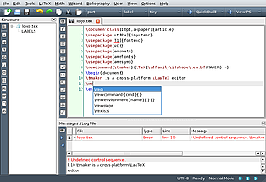

Texmaker
Dieser Artikel wurde für die folgenden Ubuntu-Versionen getestet:
Ubuntu 16.04 Xenial Xerus
Zum Verständnis dieses Artikels sind folgende Seiten hilfreich:
Texmaker  ist ein Editor zur Erstellung und Bearbeitung von Dateien des mächtigen Textsatzprogramms LaTeX. In seiner Aufmachung und Funktionalität ist er Kile sehr ähnlich, wobei er auch durchaus Vorteile bieten kann. Zum einen ist er schlanker und schneller als Kile – zum anderen ist er auf allen drei wichtigsten Betriebssystemen (Unix, macOS, Windows) verfügbar, sodass er eine echte Alternative für diejenigen ist, die aufgrund ihrer Arbeitsumgebung das Betriebssystem wechseln müssen und trotzdem nicht auf LaTeX verzichten wollen.
ist ein Editor zur Erstellung und Bearbeitung von Dateien des mächtigen Textsatzprogramms LaTeX. In seiner Aufmachung und Funktionalität ist er Kile sehr ähnlich, wobei er auch durchaus Vorteile bieten kann. Zum einen ist er schlanker und schneller als Kile – zum anderen ist er auf allen drei wichtigsten Betriebssystemen (Unix, macOS, Windows) verfügbar, sodass er eine echte Alternative für diejenigen ist, die aufgrund ihrer Arbeitsumgebung das Betriebssystem wechseln müssen und trotzdem nicht auf LaTeX verzichten wollen.
TeXstudio , ehemals TexMakerX, ist eine Abspaltung (Fork) von Texmaker, welche den Vorteil hat, dass sie eine interaktive Rechtschreibüberprüfung und ein Werkzeug zur Textanalyse besitzt, sowie diverse kleine Änderungen. Zur Installation siehe weiter unten.
Installation¶

Folgendes Paket muss installiert [1] werden:
texmaker (universe)
 mit apturl
mit apturl
Paketliste zum Kopieren:
sudo apt-get install texmaker
sudo aptitude install texmaker
Verwendung¶
Umlaute¶
Soll ein Dokument, das unter Windows mit folgenden Paketen verfasst wurde,
1 2 3 | \usepackage[ngerman]{babel}
\usepackage[T1]{fontenc}
\usepackage[latin1]{inputenc}
|
mit Texmaker verwendet werden, muss auf die Codierung der Dateien geachtet werden. Windows verwendet ISO 8859-15 beziehungsweise Latin1. Standardmäßig wird unter Ubuntu UTF-8 verwendet.
Die Codierung ist unter "Texmaker -> Optionen -> Texmaker konfigurieren -> Editor": 3. Zeile mit "Editor: Fontkodierung" umstellbar.
Rechtschreibprüfung einrichten¶
Um Texmaker in die Lage zu versetzen, den Quelltext auf die Richtigkeit der (deutschen) Rechtschreibung zu überprüfen, muss zunächst ein Wörterbuch installiert[1] werden. Das geht am einfachsten durch die Installation eines Paketes wie
myspell-de-de oder
hunspell-de-de
Danach muss eventuell noch unter "Texmaker -> Optionen -> Texmaker konfigurieren -> Editor -> Rechtschreibwörterbuch" der Pfad zur entsprechenden Wörterbuchdatei angegeben werden. Das ist in unserem Fall /usr/share/myspell/dicts/de-DE.dic. Hat man den Haken bei "Inline" gesetzt und klickt nun auf OK, sieht man sofort, dass im Quelltext die nicht im Wörterbuch befindlichen Wörter mit roten Wellenlinien unterstrichen werden, wobei Befehle unmarkiert bleiben. Über das Menü "Editieren -> Rechtschreibung prüfen" kann der Text auch mit Hilfe eines Kontextmenüs auf Rechtschreibfehler durchsucht werden.
Schnelles Übersetzen einrichten¶
Mit Hilfe vom "Schnelles Übersetzens" können beliebige Befehle hintereinander bei nur einem einzigen Klick auf "Schnelles Übersetzen" ausgeführt werden. Das ist in sofern praktisch, dass für ein korrektes Inhaltsverzeichnis drei Mal kompiliert werden muss. Aber auch andere Befehle, wie z.B. makeindex lassen sich einbinden. "Texmaker -> Optionen -> Texmaker konfigurieren -> Schnelles Übersetzen". Hier wählt man "Benutzer" und gibt für z.B. drei Mal kompilieren mit pdflatex "Benutzer -> pdflatex -interaction=nonstopmode %.tex|pdflatex -interaction=nonstopmode %.tex|pdflatex -interaction=nonstopmode %.tex" ein. Mit Stichwortverzeichnis würde es beim benutzerdefiniertem Befehl so aussehen: "pdflatex -interaction=nonstopmode %.tex|makeindex %.idx|pdflatex -interaction=nonstopmode %.tex"
TeXstudio¶

Installation¶
TexStudio ist in den offiziellen Paketquellen enthalten. Es ist nur das folgende Paket zu installieren [1].
texstudio (universe)
mit apturl
Paketliste zum Kopieren:
sudo apt-get install texstudio
sudo aptitude install texstudio
PPA¶
Adresszeile zum Hinzufügen des PPAs:
ppa:blahota/texstudio
Hinweis!
Zusätzliche Fremdquellen können das System gefährden.
Ein PPA unterstützt nicht zwangsläufig alle Ubuntu-Versionen. Weitere Informationen sind der  PPA-Beschreibung des Eigentümers/Teams blahota zu entnehmen.
PPA-Beschreibung des Eigentümers/Teams blahota zu entnehmen.
Damit Pakete aus dem PPA genutzt werden können, müssen die Paketquellen neu eingelesen werden.
Nach dem Aktualisieren der Paketquellen erfolgt die Installation wie oben angegeben.
Fremdpaket¶
Von der der Projektseite kann man fertige .deb-Pakete herunterladen. Es werden dabei eine 32-Bit und eine 64-Bit Version zur Verfügung gestellt. Die Installation erfolgt nach dem Herunterladen über den Paket-Installer durch einen Doppelklick auf die .deb-Datei.
Hinweis!
Fremdpakete können das System gefährden.
Sollte TeXstudio nicht starten, so ist daran das fehlende Paket libqt4-core Schuld. Es fehlt in den .deb-Paketen des Entwicklers und muss bei Bedarf nachinstalliert werden.
Aus dem Quelltext¶
Für andere Rechnertypen muss TeXstudio kompiliert werden. Dafür müssen folgende Pakete installiert seien:
gcc
libqt4-dev
Nun lädt man sich den Quellcode von der Projektseite  herunter, entpackt ihn [3] und führt das in diesem Ordner vorhandene Bash-Script aus [4]:
herunter, entpackt ihn [3] und führt das in diesem Ordner vorhandene Bash-Script aus [4]:
sudo sh ./BUILD.sh
 Programmübersicht
Programmübersicht- Erstellt mit Inyoka
-
 2004 – 2017 ubuntuusers.de • Einige Rechte vorbehalten
2004 – 2017 ubuntuusers.de • Einige Rechte vorbehalten
Lizenz • Kontakt • Datenschutz • Impressum • Serverstatus -
Serverhousing gespendet von